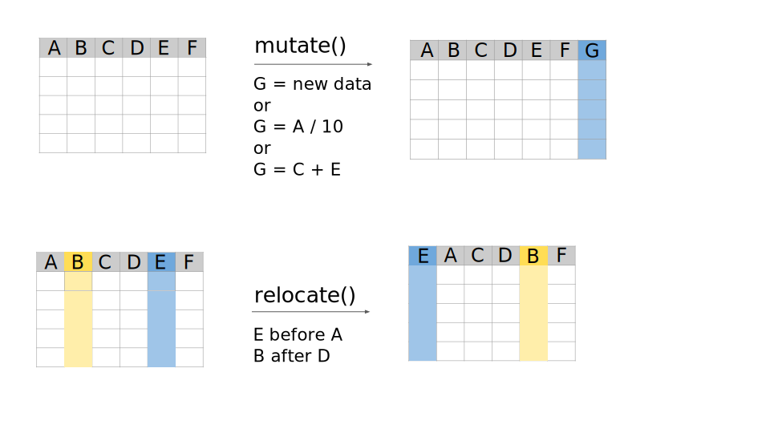

dplyr tutorial: manupulate data frames
What is dplyr ?
dplyr is a data manipulation framework that offers a consistent set of functions, or “verbs”, to tackle common data manipulation tasks. You’ll see how dplyr’s shortcuts can be used to perform traditional R data manipulation more efficiently. It also provides verbs that can help to simplify complex data operations.
This package is part of a larger package called tidyverse. So we need to install tidyverse and it will download automatically dplyr and other useful packages (see the link below).
As this package is not installed by default, it must be installed and activated.
Code
# Install the package
install.packages("tidyverse")
# Load the library to make it accessible in you working environment
library(tidyverse)Link : Tidyverse
Training dataset : clinical_data
Using the RStudio interface, load the file clinical_data.csv (See Manipulate the data)
For the following examples, we will take a dataset composed with some clinical variables (columns) and patients (rows).The dataset is named clinical_data. Display the 6 first rows.
Code
head(clinical_data)# A tibble: 6 × 15
patient_id age gender smoking_status height weight blood_pressure_systolic
<dbl> <dbl> <chr> <chr> <dbl> <dbl> <dbl>
1 1 65.0 Male Smoker 181. 98.8 123.
2 2 58.6 Male Non-Smoker 163. 53.6 110.
3 3 66.5 Male Non-Smoker 176. 76.9 114.
4 4 75.2 Male Non-Smoker 166. 69.7 111.
5 5 57.7 Male Smoker 161. 70.8 98.8
6 6 57.7 Male Non-Smoker 179. 68.2 136.
# ℹ 8 more variables: blood_pressure_diastolic <dbl>, cholesterol <dbl>,
# glucose <dbl>, heart_rate <dbl>, hospital_visits_last_year <dbl>,
# diagnosis <chr>, treatment_group <chr>, treatment_response <chr>Check the dimensions of the data.frame. How many patients are described ? How many clinical features are available ?
Code
dim(clinical_data)Answer
[1] 10000 15The table contains 10000 patients and 15 features.
Unlike our first example, you can see in the Environment panel that this dataset contains a large number of rows. This doesn’t change the functions we will be using; on the contrary, you will see that you will be able to work on very large datasets more easily.
Manipulate data.frame with dplyr
In this section, we introduce the pipe %>%, a syntax that allows you to read the data and pass it through a series of functions seamlessly. The first pipe takes the initial dataset, making it easy to apply successive transformations in a clear, step-by-step manner.
With dplyr, you have all the tools needed to efficiently manipulate your data. You can filter, select, reorder, and modify rows and columns with simple functions like filter(), slice(), arrange(), select(), and mutate(). Additionally, you can rename columns, change their order, and even summarize groups of rows by their average, maximum, standard deviation etc.
Subset your dataset
We can select specific portions of data, such as rows, columns, or both, from a larger data set based on certain conditions. Sub-setting allows to extract meaningful data for analysis without modifying the original data set.

Select columns with the select() function
Use the select() function to display the columns weight and blood_pressure_systolic.
Key words to write on your favorite browser
How to select columns dplyr R
Or use the help provided by the package dplyr.
Code
# NOTE : Here, we specify the package name with a double colon (::) and then the function name,
# to avoid conflicts between functions that may have the same name.
?dplyr::selectCode
# We refer to the columns by their name, the name is here evaluated as a variable (no quote)
clinical_data %>%
select(blood_pressure_systolic, blood_pressure_diastolic)This function is particularly interesting because it can be combined with other functions to either be more precise, or to search for something more vague. Try to find the function that enable to select columns starting with, ending with or containing a particular character or string.
The functions will be used as follow: select(function("char")) or select(function(function))
Key words to write on your favorite browser
select columns start with dplyr R
Answer
| Functions to combine with select | Description | Examples |
|---|---|---|
| starts_with() | Starts with a specific character/string | clinical_data %>% select(starts_with("treatment")) |
| ends_with() | Ends with a specific character/string | clinical_data %>% select(ends_with("lic")) |
| contains() | Contains a specific character/string | clinical_data %>% select(contains("blood")) |
| where() | Contains a specific type of variable | clinical_data %>% select(where(is.numeric)) |
These are just a few examples - there are many others, but these are the most important and widely used. It’s up to you to use them, test them and change them to understand how they work !
Note: We have seen that we can change the type of a variable by using functions as.* such as as.numeric() to transform a variable in numeric. In the same way you can test the type of a variable using is.* functions such as is.numeric() to test if a variable contains numeric value(s).
Looking at the above example, which columns will be returned ?
Answers
clinical_data %>% select(starts_with("treatment")) returns treatment_group, treatment_response
clinical_data %>% select(ends_with("lic")) returns blood_pressure_systolic, blood_pressure_diastolic
clinical_data %>% select(contains("blood")) returns blood_pressure_systolic, blood_pressure_diastolic
clinical_data %>% select(where(is.numeric)) returns patient_id, age, height, weight, blood_pressure_systolic, blood_pressure_diastolic, cholesterol, glucose, heart_rate, hospital_visits_last_year
Filter rows based on condition with the filter() function
To be able to filter based on values contained in columns, we need to know how to compare the content of the column with any value. In data manipulation, comparisons help you filter and select specific data based on conditions. Some common comparison operators include: == (equal to), != (not equal to), > (greater than), < (less than), >= (greater than or equal to), and <= (less than or equal to). Additionally, %in% is useful for checking if a value belongs to a set of values. These comparisons allow you to create logical statements that filter() can use to select the rows that meet your criteria.
Here is a table summarizing the most common operators:
| Operator | Description | Example |
|---|---|---|
== |
Equal to | x == "yes" , x == 6 |
!= |
Not equal to | x != "no" , x != 5 |
> , < |
Greater than, Less than | x > 5 , x < 5 |
>= , <= |
Greater/Less than or equal to | x >= 5 , x <= 5 |
%in% |
Checks if value is in a set | x %in% c("gender", "heart_rate") |
& |
logical AND | x < 6 & x > 3 |
| |
logical OR | x > 6 | x < 3 |
! |
logical NO | !x %in% c("gender", "heart_rate") |
What does these codes do ?
clinical_data %>% filter(gender == "Female" | heart_rate >= 70)
Answer
Using this command line, you are reading the object clinical_data with the first %>% and apply the filter() function with the second %>%.
The expression (the code within the brackets) contains two comparisons.
The first one compares all the elements in the column gender to the string “Female”, this comparison returns TRUE when the column gender contains “Female”.
The second one compares all the elements in the column heart_rate to the numeric value 70, this comparison returns TRUE when the column heart_rate contains values greater or equal to 70.
The two comparisons are separated by the logical OR | , this means that either the first comparison or the second is TRUE . The samples come from women or have at least 70 of heart rate
clinical_data %>% filter(gender == "MALE") %>% filter(height >= 170)
Answer
There seems to be a problem. The result is blank. There’s a problem with the way “MALE” is written: only the “M” should be capitalized. Don’t forget that case is very important! You may also notice that R returns no error, only an empty element.
By the way, if you stored the result in a variable, you’d immediately see that the variable would be empty.
clinical_data %>% filter(gender == "Female") %>% filter(heart_rate >= 70)
Answer
As above, the object clinical_data is first read then two passes of filtering are applied. The %>% enable to chain multiple treatments, each operation being applied to the result of the previews one.
While the comparisons are identical to the first command line, the effect is different. Indeed, the first occurrence of the function filter() will directly filter for women and the result of this filtering is given to the second occurrence of filter() where samples having at least 70 of heart rate will be kept.
In other words the two comparisons must be TRUE and the selected samples come from women AND have at least 70 of heart rate.
Bonus: Could you write the former line in an other way ? (There is a tip in the answer above)
Answer
You can combine the comparisons in one expression wanting that both of them are TRUE, this is possible using the logical AND &.
clinical_data %>% filter(gender == "Female" & heart_rate >= 70)
clinical_data %>% filter(gender == "Female") %>% filter(heart_rate >= 70) %>% select(patient_id:gender)
Answer
From the clinical_data object, you fist filter for women, then for heart rate value of at least 70 and then extract all the columns from patient_id to gender.
The : operator creates vector from a value (left element, patient_id) to another (right element, gender).
- Can you interpret this error ?
I want display the patient ID of the samples treated with either drug A or drug B with heart rate less than 80.
clinical_data %>% filter(treatment_group %in% c("Drug A","Drug B")) %>% select(patient_id) %>% filter(heart_rate >= 80)
This bring an Error :
i Error in filter():
In argument: heart_rate >= 80.
! object ‘heart_rate’ not found
Run rlang::last_trace() to see where the error occurred.
Answer
From the clinical_data object, you fist filter for women, then you select for the column patient_id and finally you filter for heart rate of at least 80.
By applying the selection of the column patient_id only, the column heart_rate do not exists anymore which explain the ! object 'heart_rate' not found error.
Filter rows based on their positions with the slice() function and derivatives
The slice() function in dplyr is used to select rows from a dataset based on their position. Unlike filter(), which selects rows based on conditions, slice() lets you specify the exact row numbers to extract. It is particularly useful for tasks like getting the first few rows, excluding specific rows, or extracting rows at regular intervals. Variants like slice_head(), slice_tail(), slice_min() and slice_max() provide more flexibility, allowing you to select rows based on different criteria like smallest values, random sampling, or a fixed number of rows.
Select beginning and end of the data.frame
We have seen the basic R functions that allow us to display the beginning and end of a data frame. dplyr offers equivalent functions which can be seamlessly integrated into your data processing sequence.
i) Display the 10 first rows and the columns heart_rate, gender and diagnosis of clinical_data after having selected the treatment A.
# A tibble: 10 × 3
heart_rate gender diagnosis
<dbl> <chr> <chr>
1 79.7 Male Diabetes
2 57.4 Male Hypertension
3 77.5 Male Hypertension
4 60.1 Female Diabetes
5 75.3 Female Hypertension
6 69.7 Female Diabetes
7 65.2 Female No Disease
8 76.8 Male No Disease
9 79.5 Male Diabetes
10 74.9 Male Diabetes Which slice function would you use ? Which parameters (do not forget the help page or the web) ? You need to combine functions that we have seen in the previous section.
Code
clinical_data %>% filter(treatment_group == "Drug A") %>%
select(heart_rate, gender, diagnosis) %>%
slice_head(n=10)ii) Display the bottom 5% rows of the data frame and the column from gender to treatment_group
# A tibble: 500 × 12
gender smoking_status height weight blood_pressure_systolic
<chr> <chr> <dbl> <dbl> <dbl>
1 Male Non-Smoker 158. 59.3 129.
2 Male Non-Smoker 162. 64.3 115.
3 Male Smoker 166. 42.4 135.
4 Male Non-Smoker 167. 75.9 106.
5 Male Smoker 167. 66.6 123.
6 Male Smoker 185. 57.7 155.
7 Female Non-Smoker 155. 58.6 117.
8 Female Non-Smoker 162. 63.6 118.
9 Male Non-Smoker 170. 79.4 123.
10 Male Non-Smoker 179. 82.8 147.
# ℹ 490 more rows
# ℹ 7 more variables: blood_pressure_diastolic <dbl>, cholesterol <dbl>,
# glucose <dbl>, heart_rate <dbl>, hospital_visits_last_year <dbl>,
# diagnosis <chr>, treatment_group <chr>Which slice function would you use ? Which parameters do not forget the help page or the web) ? You need to combine functions that we have seen in the previous section.
Code
clinical_data %>%
select(gender:treatment_group) %>%
slice_tail(prop=0.05)Select beginning and end of the ordered data.frame
slice_max() and slice_min() enables to select a defined number or proportion of rows depending on the values contained in a given column.
i) Select the 5 patient_id corresponding to the highest heart rate (heart_rate).
# A tibble: 5 × 2
patient_id heart_rate
<dbl> <dbl>
1 633 130
2 3004 130
3 5688 130
4 6598 130
5 6955 130Note: You need to handle ties, these are identical values that can not be ordered between them. Either you keep them all (default) or you keep the first(s) element(s) encountered in the column among those having the same value. In this example, we chose the former solution.
Code
clinical_data %>%
slice_max(order_by = heart_rate, n = 5, with_ties = F) %>%
select(patient_id, heart_rate)ii) Which diagnosis are mainly harbored by the patients with the 20% lowest heart rates (tr).
diagnosis
Diabetes Heart Disease Hypertension No Disease
568 287 574 571 Step-by-step
First, select the 20% lowest heart rate rows and the column diagnosis and save it in a variable named lowest_hr using slice_min().
Code
lowest_hr <- clinical_data %>%
slice_min(order_by = heart_rate, prop = 0.2) %>%
select(diagnosis)Then, use the basic function table() which is an easy and very useful function to display all categories with the number of elements per category. This function takes as an argument a vector of categorical values, for instance the values of the column known.oncogenes.
Code
table(lowest_hr)Order rows with the arrange() function
The arrange() function in R’s dplyr package is used to reorder rows in a data frame based on the values of one or more columns. It allows you to arrange the rows in ascending or descending order depending on the values in the specified column(s).
Code
?dplyr::arrange- Ascending order
Code
clinical_data %>%
arrange(age)- Descending order
Code
clinical_data %>%
arrange(desc(age))What have we learned ?
We can use the function
select()to extract columns using their names as variable.We can use the function
filter()to select rows depending on values contained in the columns that we call by their names as variable.We can select elements in a column by using comparison operators (eg.
==,>,!=) between a column called by its name as variable and a value (or a vector of values - c(element1, element2,etc.))We can use
slice_*()functions to select rows depending on their positions after ordering the table or not.We can order rows using
arrange()function either in ascending or descending order.We can combine a series of operations using
%>%, where each operation take as input the result of the preceding operation. The order of the operations is thus very important.If it is not working and returning an error, do not freak out and read carefully the error. If it is still unclear, copy paste the Error in a web browser.
Create and transform columns
We can add columns filled with new data or with transformed values from an existing column. The new columns can be located at specific places in the data frame.

Modify or create a column in your data frame with mutate()
Create a column named none.diag containing a TRUE if the column diagnosis contains No Disease and FALSE otherwise and display the 10 rows containing the lowest heart rate values and the columns patient_id, diagnosis , heart_rate and the new column none.diag.
# A tibble: 24 × 4
patient_id diagnosis heart_rate none.diag
<dbl> <chr> <dbl> <lgl>
1 973 Diabetes 40 FALSE
2 1074 Diabetes 40 FALSE
3 1768 Hypertension 40 FALSE
4 1925 No Disease 40 TRUE
5 2447 Diabetes 40 FALSE
6 2886 Diabetes 40 FALSE
7 3812 No Disease 40 TRUE
8 4055 No Disease 40 TRUE
9 4758 Hypertension 40 FALSE
10 4955 Diabetes 40 FALSE
# ℹ 14 more rowsStep-by-step
i) Define how to obtain a Boolean vector (TRUE/FALSE) depending on the diagnosis column.
Answer
You need to use the comparison operator == between the name of the column (diagnosis) and the value None. In dplyr functions, the names of the column are called as variable (no quote), the string value "``No Disease``" however needs to be surrounded by quotes.
diagnosis ==``"No Disease"
ii) Write the mutate() function to add the none.diag column.
Code
mutate(none.diag = diagnosis == "No Disease")iii) Write the full stream of function from reading the data.frame to selection of the selection of the columns
Code
clinical_data %>%
mutate(none.diag = diagnosis == "No Disease") %>%
slice_min(order_by = heart_rate, n=10) %>%
select(patient_id,diagnosis,heart_rate,none.diag)You need to combine the mutate() function with functions enabling the select rows and columns.
iv) With the columns height and weight we can calculate the BMI. We will create a new column named BMI and display it with patient_id.
# A tibble: 5 × 2
patient_id BMI
<dbl> <dbl>
1 1 0.546
2 2 0.329
3 3 0.437
4 4 0.421
5 5 0.439Code
clinical_data %>%
mutate(BMI = weight / height) %>%
slice_head(n=5) %>%
select(patient_id, BMI)Modulate position of columns with relocate()
i) Move the gender column to the first position in the dataset.
# A tibble: 10,000 × 15
gender patient_id age smoking_status height weight blood_pressure_systolic
<chr> <dbl> <dbl> <chr> <dbl> <dbl> <dbl>
1 Male 1 65.0 Smoker 181. 98.8 123.
2 Male 2 58.6 Non-Smoker 163. 53.6 110.
3 Male 3 66.5 Non-Smoker 176. 76.9 114.
4 Male 4 75.2 Non-Smoker 166. 69.7 111.
5 Male 5 57.7 Smoker 161. 70.8 98.8
6 Male 6 57.7 Non-Smoker 179. 68.2 136.
7 Male 7 75.8 Non-Smoker 187. 67.5 122.
8 Female 8 67.7 Non-Smoker 161. 67.2 132.
9 Male 9 55.3 Non-Smoker 173. 63.7 118.
10 Female 10 65.4 Smoker 176. 42.6 110.
# ℹ 9,990 more rows
# ℹ 8 more variables: blood_pressure_diastolic <dbl>, cholesterol <dbl>,
# glucose <dbl>, heart_rate <dbl>, hospital_visits_last_year <dbl>,
# diagnosis <chr>, treatment_group <chr>, treatment_response <chr>Code
clinical_data %>%
relocate(gender)ii) Move the glucose column just after height column.
# A tibble: 10,000 × 15
patient_id age gender smoking_status height glucose weight
<dbl> <dbl> <chr> <chr> <dbl> <dbl> <dbl>
1 1 65.0 Male Smoker 181. 67.1 98.8
2 2 58.6 Male Non-Smoker 163. 103. 53.6
3 3 66.5 Male Non-Smoker 176. 119. 76.9
4 4 75.2 Male Non-Smoker 166. 101. 69.7
5 5 57.7 Male Smoker 161. 89.8 70.8
6 6 57.7 Male Non-Smoker 179. 195. 68.2
7 7 75.8 Male Non-Smoker 187. 129. 67.5
8 8 67.7 Female Non-Smoker 161. 202. 67.2
9 9 55.3 Male Non-Smoker 173. 107. 63.7
10 10 65.4 Female Smoker 176. 166. 42.6
# ℹ 9,990 more rows
# ℹ 8 more variables: blood_pressure_systolic <dbl>,
# blood_pressure_diastolic <dbl>, cholesterol <dbl>, heart_rate <dbl>,
# hospital_visits_last_year <dbl>, diagnosis <chr>, treatment_group <chr>,
# treatment_response <chr>Code
clinical_data %>%
relocate(glucose, .after = height)NOTE : To move a column before, just replace .after argument by .before.
Group and summarise the information with group_by() and summarise()
group_by() is used to group data based on one or more variables (columns). This function is often used in conjunction with other tidyverse functions.
Code
?dplyr::group_byOne function that works perfectly with group_by() is summarise().
Code
?dplyr::summariseWe can, for example, know the age mean of all patients. Indeed, summarise() can take in account basic functions like mean(), median(), max()…
# A tibble: 1 × 1
mean_age
<dbl>
1 60.0Code
clinical_data %>%
summarise(mean_age = mean(age))But combined with group_by(), we can be more precise and obtain the average age by gender.
# A tibble: 2 × 2
gender mean_age
<chr> <dbl>
1 Female 59.9
2 Male 60.1Answer
To carry out this operation, we put two functions in a row, always using the %>% symbol. The group_by() function first groups the variable we’re interested in, in this case gender. There are only two possibilities for this variable, Male or Female. Secondly, the summarise() function takes into account the age variable, calculating the average for each possibility of the gender variable. What’s more, the summarise() function displays the results in the console, rather than entering them directly into the dataframe.
Code
clinical_data %>%
group_by(gender) %>%
summarise(mean_age = mean(age))What have we learned ?
We can use the function
mutate()to create new columns based on existing ones.We can use the function
relocate()to move columns as required in the dataset.We can use the function
group_by()to group data based on one or several columns (variables). This function is combined with other likesummarise()to display a summary of result based on data.
Practice : TCGA_LUAD
You will work on extracted data from the TCGA public database, and now you will browse it to understand it better !
- What are the samples with at least 70% of purity ?
Answer
sampleID
1 TCGA.05.4396.01
2 TCGA.05.4397.01
3 TCGA.05.4426.01
4 TCGA.05.5429.01
5 TCGA.05.5715.01
6 TCGA.38.4630.01
7 TCGA.44.5644.01
8 TCGA.44.6146.01
9 TCGA.49.4486.01
10 TCGA.49.AAR9.01
11 TCGA.49.AARR.01
12 TCGA.50.5930.01
13 TCGA.50.5931.01
14 TCGA.50.5932.01
15 TCGA.50.5946.01
16 TCGA.50.6591.01
17 TCGA.55.6972.01
18 TCGA.55.6984.01
19 TCGA.55.8087.01
20 TCGA.55.8094.01
21 TCGA.55.A494.01
22 TCGA.62.A46O.01
23 TCGA.62.A46P.01
24 TCGA.64.5774.01
25 TCGA.64.5775.01
26 TCGA.67.3773.01
27 TCGA.67.4679.01
28 TCGA.69.7764.01
29 TCGA.73.4676.01
30 TCGA.75.6206.01
31 TCGA.78.7155.01
32 TCGA.78.7156.01
33 TCGA.78.7158.01
34 TCGA.78.7161.01
35 TCGA.78.7167.01
36 TCGA.78.7536.01
37 TCGA.78.7537.01
38 TCGA.78.7633.01
39 TCGA.78.8662.01
40 TCGA.86.7955.01
41 TCGA.86.8054.01
42 TCGA.86.8358.01
43 TCGA.86.A4P7.01
44 TCGA.86.A4P8.01
45 TCGA.91.6847.01
46 TCGA.91.8499.01
47 TCGA.95.7043.01
48 TCGA.95.7948.01
49 TCGA.97.8171.01
50 TCGA.99.AA5R.01
51 TCGA.L9.A50W.01
52 TCGA.L9.A7SV.01
53 TCGA.MP.A5C7.01Code
TCGA_LUAD %>%
filter(Purity >= 0.7) %>%
select(sampleID)- What is the total purity median ?
Answer
median_Purity
1 0.59Code
TCGA_LUAD %>%
summarise(median_Purity = median(Purity))- What is the mean and standard deviation of purity for each stages ?
Answer
# A tibble: 8 × 3
pathologic_stage mean_purity sd_purity
<chr> <dbl> <dbl>
1 Stage I 0.577 0.0737
2 Stage IA 0.590 0.118
3 Stage IB 0.633 0.125
4 Stage IIA 0.569 0.105
5 Stage IIB 0.594 0.117
6 Stage IIIA 0.587 0.107
7 Stage IIIB 0.688 0.142
8 Stage IV 0.671 0.142 Code
TCGA_LUAD %>%
group_by(pathologic_stage) %>%
summarize(
mean_purity = mean(Purity, na.rm = TRUE),
sd_purity = sd(Purity, na.rm = TRUE)
)- Which samples are in the top 20% of MAPK expression ?
Answer
sampleID signature_MAPK
1 TCGA.55.8207.01 0.9612172
2 TCGA.64.1680.01 0.9596072
3 TCGA.69.7760.01 0.9580315
4 TCGA.78.7158.01 0.9579475
5 TCGA.38.4628.01 0.9520071
6 TCGA.55.7914.01 0.9495374
7 TCGA.50.6591.01 0.9489357
8 TCGA.91.6836.01 0.9458304
9 TCGA.69.7980.01 0.9393414
10 TCGA.05.4249.01 0.9298746
11 TCGA.55.1595.01 0.9224339
12 TCGA.50.5942.01 0.9224102
13 TCGA.86.7713.01 0.9210721
14 TCGA.91.A4BD.01 0.9058053
15 TCGA.73.4662.01 0.8991331
16 TCGA.73.4668.01 0.8970708
17 TCGA.L9.A50W.01 0.8865940
18 TCGA.78.7163.01 0.8859368
19 TCGA.91.8496.01 0.8842351
20 TCGA.44.7659.01 0.8809789
21 TCGA.50.5051.01 0.8796467
22 TCGA.05.4390.01 0.8763612
23 TCGA.64.5775.01 0.8675626
24 TCGA.80.5608.01 0.8626194
25 TCGA.55.7570.01 0.8624813
26 TCGA.62.8397.01 0.8606748
27 TCGA.50.5944.01 0.8509310
28 TCGA.67.3773.01 0.8504866
29 TCGA.55.8097.01 0.8483321
30 TCGA.78.7145.01 0.8464395
31 TCGA.91.6847.01 0.8334299
32 TCGA.50.8457.01 0.8330630
33 TCGA.62.8394.01 0.8306887
34 TCGA.50.5932.01 0.8292485
35 TCGA.L9.A443.01 0.8287184
36 TCGA.05.5715.01 0.8286057
37 TCGA.69.7973.01 0.8227336
38 TCGA.55.8087.01 0.8206848
39 TCGA.78.7147.01 0.8197464
40 TCGA.05.4427.01 0.8186530
41 TCGA.55.7283.01 0.8149257
42 TCGA.50.5946.01 0.8125286
43 TCGA.78.7167.01 0.8120508
44 TCGA.44.8117.01 0.8050348
45 TCGA.78.7161.01 0.8050126
46 TCGA.44.4112.01 0.7968219
47 TCGA.67.6215.01 0.7929747
48 TCGA.55.7725.01 0.7904478
49 TCGA.55.8206.01 0.7853667Code
TCGA_LUAD %>%
slice_max(order_by = signature_MAPK, prop = 0.2, with_ties = F) %>%
select(sampleID, signature_MAPK)- Extract MAPK expression for each samples with KRAS and present it by descending order.
Answer
sampleID known.oncogenes signature_MAPK
1 TCGA.55.8207.01 KRAS 0.9612172
2 TCGA.55.7914.01 KRAS 0.9495374
3 TCGA.91.6836.01 KRAS 0.9458304
4 TCGA.69.7980.01 KRAS 0.9393414
5 TCGA.05.4249.01 KRAS 0.9298746
6 TCGA.55.1595.01 KRAS 0.9224339
7 TCGA.86.7713.01 KRAS 0.9210721
8 TCGA.73.4662.01 KRAS 0.8991331
9 TCGA.73.4668.01 KRAS 0.8970708
10 TCGA.44.7659.01 KRAS 0.8809789
11 TCGA.50.5051.01 KRAS 0.8796467
12 TCGA.05.4390.01 KRAS 0.8763612
13 TCGA.64.5775.01 KRAS 0.8675626
14 TCGA.80.5608.01 KRAS 0.8626194
15 TCGA.67.3773.01 KRAS 0.8504866
16 TCGA.55.8097.01 KRAS 0.8483321
17 TCGA.78.7145.01 KRAS 0.8464395
18 TCGA.50.8457.01 KRAS 0.8330630
19 TCGA.50.5932.01 KRAS 0.8292485
20 TCGA.L9.A443.01 KRAS 0.8287184
21 TCGA.69.7973.01 KRAS 0.8227336
22 TCGA.05.4427.01 KRAS 0.8186530
23 TCGA.55.7283.01 KRAS 0.8149257
24 TCGA.78.7167.01 KRAS 0.8120508
25 TCGA.78.7161.01 KRAS 0.8050126
26 TCGA.55.7725.01 KRAS 0.7904478
27 TCGA.64.5778.01 KRAS 0.7851112
28 TCGA.64.5774.01 KRAS 0.7812835
29 TCGA.05.4415.01 KRAS 0.7694772
30 TCGA.67.3774.01 KRAS 0.7675273
31 TCGA.67.4679.01 KRAS 0.7643734
32 TCGA.NJ.A4YI.01 KRAS 0.7628199
33 TCGA.73.7498.01 KRAS 0.7604873
34 TCGA.55.8094.01 KRAS 0.7374347
35 TCGA.97.7938.01 KRAS 0.7325512
36 TCGA.86.8054.01 KRAS 0.7292614
37 TCGA.95.7567.01 KRAS 0.7261443
38 TCGA.78.8655.01 KRAS 0.7248454
39 TCGA.55.A494.01 KRAS 0.7216151
40 TCGA.05.4433.01 KRAS 0.6885834
41 TCGA.49.4505.01 KRAS 0.6795376
42 TCGA.73.4677.01 KRAS 0.6723025
43 TCGA.49.4510.01 KRAS 0.6651147
44 TCGA.49.AARQ.01 KRAS 0.6647472
45 TCGA.78.7539.01 KRAS 0.6630700
46 TCGA.62.A46S.01 KRAS 0.6600295
47 TCGA.75.7030.01 KRAS 0.6592348
48 TCGA.97.A4M0.01 KRAS 0.6567620
49 TCGA.86.8281.01 KRAS 0.6417078
50 TCGA.91.8497.01 KRAS 0.6388438
51 TCGA.05.4403.01 KRAS 0.6313164
52 TCGA.35.3615.01 KRAS 0.6100616
53 TCGA.91.6849.01 KRAS 0.5996117
54 TCGA.44.7671.01 KRAS 0.5974010
55 TCGA.50.5936.01 KRAS 0.5872490
56 TCGA.55.8514.01 KRAS 0.5769864
57 TCGA.55.6984.01 KRAS 0.5728733
58 TCGA.44.6776.01 KRAS 0.5702109
59 TCGA.44.6146.01 KRAS 0.5589566
60 TCGA.05.4395.01 KRAS 0.5578706
61 TCGA.75.7027.01 KRAS 0.5494847
62 TCGA.78.7148.01 KRAS 0.5160726
63 TCGA.55.7576.01 KRAS 0.5139644
64 TCGA.55.6970.01 KRAS 0.5117584
65 TCGA.75.6206.01 KRAS 0.4972637
66 TCGA.55.8615.01 KRAS 0.4952499
67 TCGA.05.4250.01 KRAS 0.4811406
68 TCGA.95.7562.01 KRAS 0.4658260
69 TCGA.55.7910.01 KRAS 0.4629788
70 TCGA.05.4418.01 KRAS 0.4378646
71 TCGA.95.A4VK.01 KRAS 0.4040509
72 TCGA.78.7540.01 KRAS 0.3998440
73 TCGA.86.8674.01 KRAS 0.3929826
74 TCGA.97.8176.01 KRAS 0.3599364
75 TCGA.55.6975.01 KRAS 0.3026009
76 TCGA.55.8299.01 KRAS 0.2971146
77 TCGA.MP.A4T8.01 KRAS 0.2917234
78 TCGA.4B.A93V.01 KRAS 0.2688583
79 TCGA.78.7166.01 KRAS 0.2303336Code
TCGA_LUAD %>%
filter(known.oncogenes == "KRAS") %>%
select(sampleID, known.oncogenes, signature_MAPK) %>%
arrange(desc(signature_MAPK))BONUS : Considering purity higher than 0.6 is high, lower than 0.4 is low and between 0.4 and 0.6 is medium. Calculate the percentage of individuals in each category by stages. Find help on Google or with chatbot !
Answer
`summarise()` has grouped output by 'pathologic_stage'. You can override using
the `.groups` argument.# A tibble: 16 × 4
# Groups: pathologic_stage [8]
pathologic_stage Purity_perf Count Percentage
<chr> <chr> <int> <dbl>
1 Stage I High 1 33.3
2 Stage I Medium 2 66.7
3 Stage IA High 24 41.4
4 Stage IA Medium 34 58.6
5 Stage IB High 32 47.1
6 Stage IB Medium 36 52.9
7 Stage IIA High 5 23.8
8 Stage IIA Medium 16 76.2
9 Stage IIB High 16 44.4
10 Stage IIB Medium 20 55.6
11 Stage IIIA High 12 30
12 Stage IIIA Medium 28 70
13 Stage IIIB High 4 66.7
14 Stage IIIB Medium 2 33.3
15 Stage IV High 11 78.6
16 Stage IV Medium 3 21.4Code
TCGA_LUAD %>%
mutate(Purity_perf = case_when(
Purity > 0.6 ~ "High",
Purity >= 0.4 & Purity <= 0.6 ~ "Medium",
Purity < 0.4 ~ "Low"
)) %>%
group_by(pathologic_stage, Purity_perf) %>%
summarise(Count = n()) %>%
group_by(pathologic_stage) %>%
mutate(Percentage = Count / sum(Count) * 100)